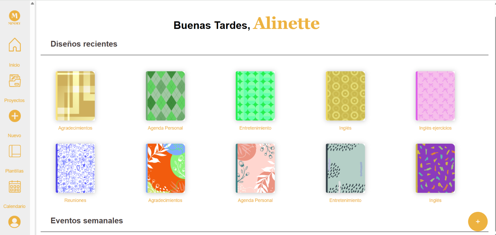
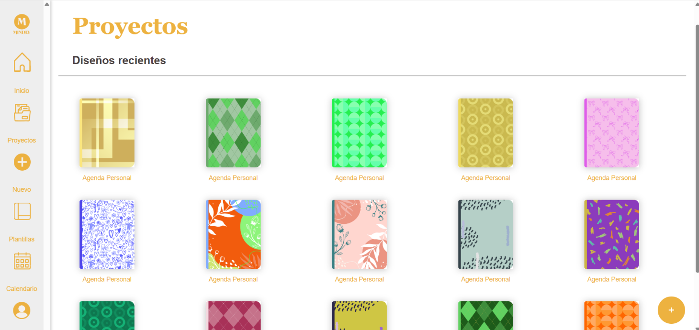
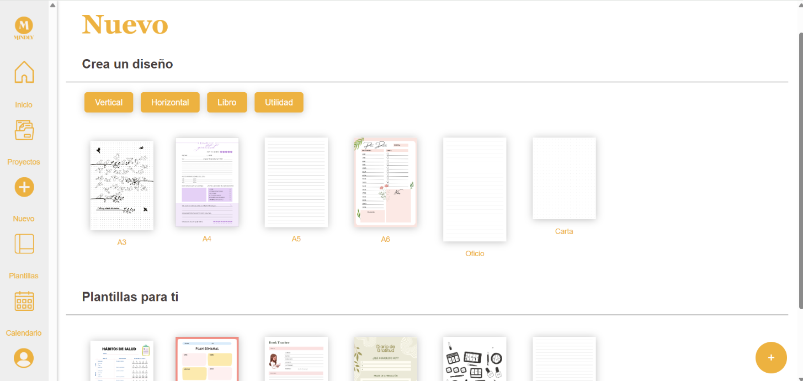
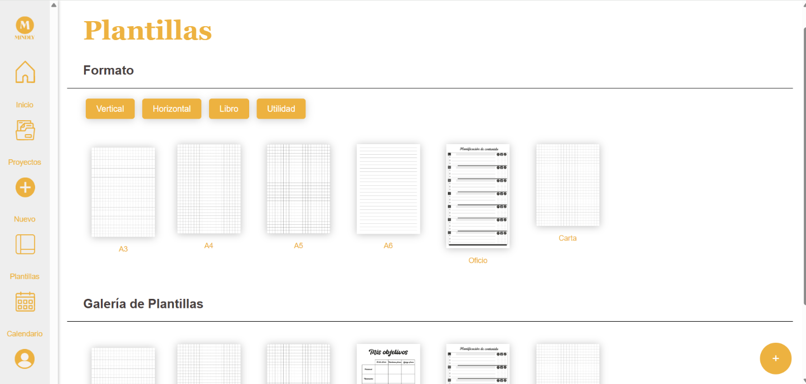
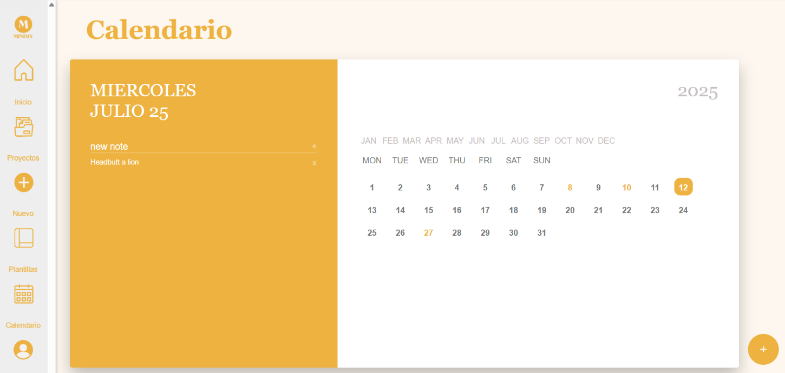

Mindly
Una propuesta digital que reúne diseños, plantillas y calendario.
Colaboradores: Alinette Galdames y Constanza Díaz
Más sobre el proyecto
Una mirada a Mindly.
Una propuesta digital que reúne diseños, plantillas y calendario en una misma interfaz.
Mindly presenta un espacio visual para consultar diseños recientes, explorar plantillas y acceder a un calendario.
La interfaz combina una navegación lateral con vistas de proyectos, formatos y recursos gráficos. Las imágenes muestran las pantallas compartidas del proyecto.
Galería
Una selección de las interfaces de Mindly.




